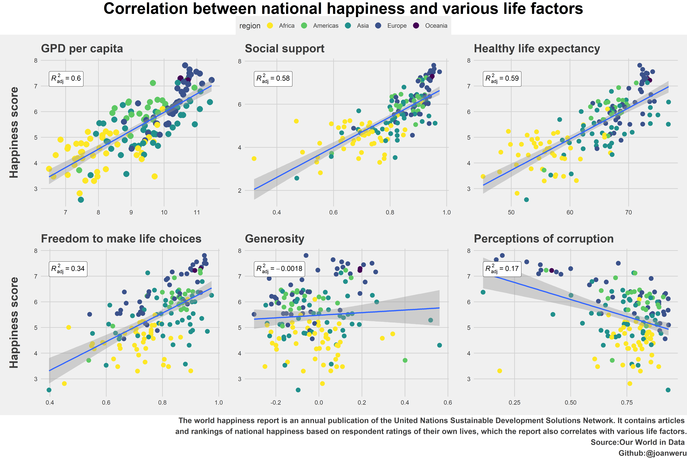

The world happiness report is an annual publication of the United Nations Sustainable Development Solutions Network. It contains articles and rankings of national happiness based on respondent ratings of their own lives, which the report also correlates with various life factors. The happiness rankings are bases on individuals own assessments of their lives as revealed by their own answers to the Cantril ladder question that invites survery participans to imagine their current position on a ladder with steps numbered from 0 to 10, where the top represents the best possible and the bottom the worst possible life for themselves.
NB: The happiness rankings are not based on an index of the six variables(GDP per capita, social support, health life expectancy, freedom, generosity and absence of corruption). The variables however explain the variation of happiness across countries and also to show how measures of well beingare themselves affected by the six life factors.
Packages to be used
library(dplyr)
library(tidyverse)
library(ggplot2)
library(countrycode)
library(ggthemes)
library(ggpubr)
library(ggflags)setwd("~/R- CLASS DATASETS/joanweru.github.io")
happiness20<-read_csv("happiness20.csv")
attach(happiness20)I map each country to it’s respective continent. I had to custom match Kosovo because it wasn’t mapping for some reason
happiness20$region<-countrycode(sourcevar = happiness20[[1]],origin = "country.name",destination = "continent",custom_match = c(Kosovo="Europe"))We use geom point to show the relationship between the various life factors and the happiness score. I added a geom smooth with a linear regression method to properly see the direction of the linear relationship.
a<-ggplot(happiness20,aes(x=`Logged GDP per capita`,y=`Ladder score`,add="reg.line"))+
geom_point(size=4,aes(colour=region))+theme_fivethirtyeight()+geom_smooth(method = lm)+
labs(title = "GPD per capita")+
theme(axis.title = element_text(face="bold",size = 18),axis.title.x = element_blank(),legend.position = "top")+
ylab("Happiness score\n")+scale_color_viridis_d(direction = -1)+
stat_regline_equation(aes(label=paste(..adj.rr.label..)),geom = "label",position = "identity")
b<-ggplot(happiness20,aes(y=`Ladder score`,x=`Social support`))+
geom_point(size=3,aes(colour=region))+scale_colour_viridis_d(direction = -1)+
theme_fivethirtyeight()+geom_smooth(method=lm)+labs(title = "Social support")+stat_regline_equation(aes(label=paste(..adj.rr.label..)),position = "identity",geom = "label",)
c<-ggplot(happiness20,aes(y=`Ladder score`,x=`Healthy life expectancy`))+
geom_point(size=3,aes(colour=factor(region)))+scale_colour_viridis_d(direction = -1)+
theme_fivethirtyeight()+geom_smooth(method=lm)+labs(title = "Healthy life expectancy")+stat_regline_equation(aes(label=paste(..adj.rr.label..)),geom = "label",position = "identity")
d<-ggplot(happiness20,aes(y=`Ladder score`,x=`Freedom to make life choices`))+
geom_point(size=3,aes(colour=region))+scale_colour_viridis_d(direction = -1)+theme_fivethirtyeight()+
geom_smooth(method=lm)+labs(title="Freedom to make life choices")+
theme(axis.title = element_text(face="bold",size = 18),axis.title.x = element_blank())+
ylab("Happiness score\n")+stat_regline_equation(aes(label=paste(..adj.rr.label..)),position = "identity",geom = "label",)
e<-ggplot(happiness20,aes(y=`Ladder score`,x=Generosity))+geom_point(size=3,aes(colour=region))+
scale_colour_viridis_d(direction = -1)+theme_fivethirtyeight()+geom_smooth(method="lm")+
labs(title="Generosity")+stat_regline_equation(aes(label=paste(..adj.rr.label..)),position = "identity",geom = "label",)
f<-ggplot(happiness20,aes(y=`Ladder score`,x=`Perceptions of corruption`))+
geom_point(size=3,aes(colour=region))+scale_colour_viridis_d(direction = -1)+
theme_fivethirtyeight()+geom_smooth(method=lm)+labs(title="Perceptions of corruption")+stat_regline_equation(aes(label=paste(..adj.rr.label..)),position = "identity",geom = "label",)
g<-ggarrange(a,b,c,d,e,f,ncol=3,nrow=2,common.legend = TRUE,legend = "top")
annotate_figure(g,top=text_grob("Correlation between national happiness and various life factors",face ="bold",family="sans",size=25,color ="black" ),bottom=text_grob("The world happiness report is an annual publication of the United Nations Sustainable Development Solutions Network. It contains articles \n and rankings of national happiness based on respondent ratings of their own lives, which the report also correlates with various life factors.\n Source:Our World in Data \n Github:@joanweru",hjust=1,x=1,color = "#3C3C3C",face="bold"))
Top ten happiest countries and top ten worst countries
happiness20$iso<-countrycode(sourcevar = happiness20[[1]],origin = "country.name",destination = "iso2c",custom_match = c(Kosovo="Europe"))
happiness20_arranged<-arrange(happiness20,desc(`Ladder score`))
top<-head(happiness20_arranged,10) #countries with highest happiness score
bottom<-tail(happiness20_arranged,10) #countries with lowest happiness score
top%>%mutate(code=tolower(iso))%>%
ggplot(aes(x=reorder(`Country name`,-`Ladder score`),y=`Ladder score`,fill=region))+
geom_col(fill="#CC9900")+theme_fivethirtyeight()+geom_flag(y=0,aes(country=code),size=14)+
labs(title = "World's happiest countries, 2020",subtitle ="The world happiness report is an annual publication of the United Nations Sustainable Development Solutions Network.\n It contains articles, and rankings of national happiness based on respondent ratings of their own lives, which the report \n also correlates with various life factors.",caption = "Source:Our World in Data \n Github:@joanweru")+
theme(plot.title = element_text(size=20),plot.subtitle = element_text(face="bold"))bottom%>%mutate(code=tolower(iso))%>%
ggplot(aes(x=reorder(`Country name`,`Ladder score`),y=`Ladder score`,fill=region))+
geom_col(fill="#339999")+scale_fill_viridis_d()+theme_fivethirtyeight()+
geom_flag(y=0,aes(country=code),size=14)+
labs(title = "World's unhappiest countries, 2020",subtitle ="The world happiness report is an annual publication of the United Nations Sustainable Development Solutions Network.\n It contains articles and rankings of national happiness based on respondent ratings of their own lives, which the report\n also correlates with various life factors.",caption = "Source:Our World in Data \n Github:@joanweru ")+
theme(plot.title = element_text(size=20),plot.subtitle = element_text(face = "bold"))